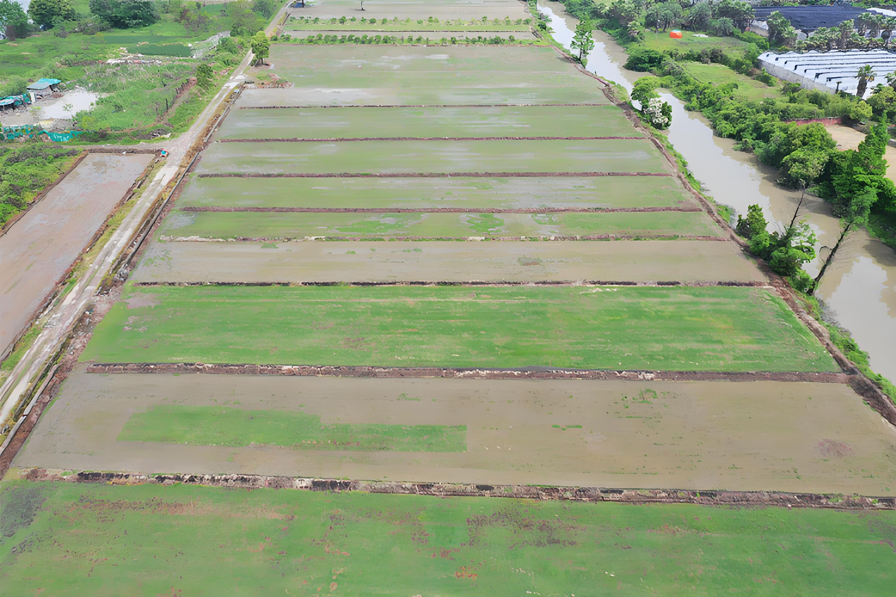

智能设备地理分布与病虫害检测系统
定位
查看
设备列表
设备状态
正常运行
警告状态
故障状态
离线状态
加载中...
正在加载地图和设备数据...
农业基地实拍

30亩地
设备7台
病虫害检测
请上传植物图片或拍照进行病虫害检测
上传图片
拍照检测
拍照
重拍
开始检测
检测结果
置信度: 0%
诊断说明
诊断信息将显示在这里...
防治建议
防治建议将显示在这里...
新的检测
下载报告
加载中...
正在检测中，请稍候...
系统通知
报告已成功生成并下载！